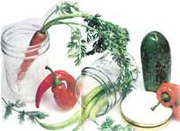

An easy way to bottle up some of your garden's best moments.
Pickles capture the essence of summer. They can be spicy as a breeze off the flower bed, or sharp as sudden lightning; sweet as slow July evenings, hot as long August nights. When you put up pickles, you preserve, warm memories for the cold days ahead.
Pickling is an easy way of "putting food by." The recipes here are all for fresh-pack, or quick-process, pickles-which you can turn out in an afternoon-rather than for brined, or fermented, pickles, which may take several weeks. Each recipe involves merely cleaning and cutting the vegetables to appropriate lengths; preparing a vinegar-based pickling liquid; packing the vegetables and liquid in containers; and either immersing the jars in boiling water for a few minutes or allowing the pickles to age in the refrigerator until their flavors have mellowed.
Before you gather up all those excess vegetables your garden is producing and go to work, get hold of a good canning guide. The standard one is the USDA's Complete Guide to Home Canning, Preserving and Freezing ($4.80 postpaid from Dover Publications, 180 Varick St., New York, NY 10014). A few tips should serve to give you an idea of what you're getting into.
Ingredients: Vegetables should be fresh, firm and free of mold and blemishes. If possible, use only pickling (pure granulated) salt; it has no iodine (which darkens the pickles) or anticaking agents (which cloud the liquid). If pickling salt is unavailable, just use non-iodized table salt and resign yourself to murky brine. Vinegar must be between 4% and 6% acid; homemade or gourmet vinegars of unknown acidity simply aren't safe as preservatives. Either white or cider vinegar will do, according to your taste; white is preferable for light-colored vegetables, since cider will darken them. If you use garlic (as several recipes call for), keep in mind that it harbors bacteria that can cause spoilage. Before adding it to the jars, peel the cloves and boil them for 1 minute in water or in the vinegar solution.
Don't stop at cukes. Pickle zukes, tomatoes, carrots, beans and peas.
Utensils: Pans for heating the pickling liquid should be enamel, stainless steel or glass, copper, galvanized or iron utensils may produce off-colors or form undesirable compounds. You'll need a water-bath canner-a large pot with a tight-fitting lid and a rack to hold canning jars. (Inexpensive models -$10 or so-are often available at discount and hardware stores.) Jars should be the kind sold specifically for home canning: glass jars with two-piece metal caps (a flat metal lid and a metal screw band). Don't reuse leftover containers from supermarket foods; they won't seal properly.
Processing: Pack and seal the jars as the manufacturer directs. Usually, this means filling each jar to within ½ inch of the rim, wiping the rim clean of all food particles, placing the lid on the jar with the sealing compound down and screwing the metal band on tight. Immerse the filled jars in boiling water in the canner (there should be 1 or 2 inches of water above the jars), cover the pot, bring the water back to boiling and boil the jars gently for the time specified in the recipe. (Start timing when the water returns to a boil.) Remove the jars from the canner and check to make sure that the lids have sealed properly; again, follow the manufacturer's directions. Most lids form a small depression in the center as they seal-giving off a "pop" as they do so.
Storing: Allow the pickles to cool for 12 to 24 hours, then remove the screw bands and store the jars in a dark, cool place. Pickles improve with age; let them sit for 2 or 3 months before eating them. Because the vinegar solutions are highly acid, few bacteria can live in them. Even so, be alert for signs of spoilage: Discard untasted any food from jars with leakage, bulging lids or spurting liquid.
A shelf full of pickles-with their rich reds, brilliant greens, bright golds and warm browns-can brighten a gray January day. So put some summer in your pantry. Make pickles!
Super-Good and Extra-Easy Dill Pickles
4 pounds cucumbers
3 cups white vinegar
3 cups water
1/3 cup salt
For each pint jar:
2 tablespoons dill seed
3 peppercorns
1 or 2 dried cayenne peppers (optional)
Wash cucumbers. Depending on your preferences and the size of the cucumbers, either leave them whole or cut them in half or into spears.
Combine vinegar, water and salt, and heat to the boiling point. Pack the cucumbers into hot, clean jars. Add dill seed, peppercorns and peppers (if desired). Seal the jars and process in a boiling water bath for 10 minutes. Makes 6-8 pints.
Note: For kosher dills, add 1 clove of garlic to each pint jar.
-Debra A. Mackiewicz
Piedmont, Kansas
Bread-and-Butter Zucchini
6 pounds medium-size zucchini
1½ cups sliced white onions
2 large garlic cloves
1/3 cup salt
2 quarts (2 trays) ice, crushed or cubes
4 cups sugar
l½ teaspoons turmeric
1½ teaspoons celery seed
2 tablespoons mustard seed
3 cups white vinegar
Wash and drain zucchini. Slice ¼-inch thick, discarding ends. Add onions and garlic. Add salt and mix thoroughly; cover with crushed ice or ice cubes; let stand 3 hours. Drain thoroughly; remove garlic cloves.
Combine sugar, spices and vinegar; heat just to boiling. Add drained zucchini and onion slices and heat 5 minutes. Pack hot pickles loosely into clean, hot pint jars to ½ inch of top. Seal and process in a boiling water bath for 5 minutes. Makes 6-8 pints.
Hot Herbed Carrots
4 hot peppers
4 cloves garlic
1 teaspoon rosemary
2 pounds baby carrots (or 2 pounds larger carrots cut in 4-inch lengths)
2 cups water
2 cups white vinegar
3 tablespoons sugar
3 tablespoons salt
Halve the peppers lengthwise. In each of 4 pint jars, put 1 pepper, 1 garlic clove and ¼ teaspoon rosemary. Pack jars full of carrots. Combine water, vinegar, sugar and salt, and bring to a boil. Reduce heat and simmer for 5 minutes. Pour liquid over carrots, seal and process in a boiling water bath for 10 minutes. Makes 4 pints.
Dilled Green Beans
4 pounds (about 4 quarts) whole green beans
For each pint jar:
¼ teaspoon hot red pepper, crushed
½ teaspoon mustard seed
½ teaspoon dill seed (or 1 dill head)
1 clove garlic
5 cups vinegar
5 cups water
½ cup salt
Wash beans thoroughly; drain and cut into lengths that will fit into pint jars. Pack the beans in clean, hot jars. Add red pepper, mustard seed, dill seed and garlic.
Combine vinegar, water and salt; heat to boiling. Pour boiling liquid over beans, seal and process in a boiling water bath for 5 minutes. Makes 6-8 pints.
Little button mushrooms make a pretty pickle, but their flavor is not in the same league with that of boletus mushrooms, dried specimens of which are used here to lend their fine, dark taste and deep, earthy color. Look for dried mushrooms labeled cepes, porcini, boletus and so on.
2 pounds small, firm white button mushrooms
1 ounce (about 2/3 cup) dried porcini, cepes or other dried boletus mushrooms
4 cups water
3 teaspoons salt
l½ cups red wine vinegar
l½ cups distilled white vinegar 3 large cloves garlic, peeled and halved
2 dozen black or white peppercorns
6 medium bay leaves
9 whole cloves
3 large blades mace
Wipe the button mushrooms clean with a damp cloth and trim the bases of the stems. Combine the mushrooms, dried boletes, water and l½ teaspoons of the salt in a large saucepan. Bring to a boil and simmer, uncovered, until tender, 10 to 15 minutes. Pour the whole business into a bowl, let cool, then cover and refrigerate overnight.
Drain the mushrooms in a colander set over a bowl (save the liquid for a delicious soup or sauce base). Either remove the pieces of boletus or leave them mixed with the buttons; although not comely, the pieces are delicious.
Combine the remaining salt with the two vinegars and the seasonings in a saucepan and bring to a boil. Cover and simmer 5 minutes.
Meanwhile, divide the drained mushrooms among heatproof storage jars that have snug lids. Divide the seasonings from the boiling-hot pickling liquid equally among the jars, then pour the spiced vinegar over the mushrooms. The liquid should cover them well; if not, add a little more vinegar or water. Let cool, cover jars and refrigerate to mellow for at least 3 days before using. At serving time, you may want to drain the mushrooms and toss them with a little olive oil. Makes about 3 pints and keeps for up to 6 months in the refrigerator.
Pickled Sugar Snaps
Although the sugar snaps are not processed, they will keep indefinitely in the refrigerator.
12 ounces sugar snap peas
2 cloves garlic
2 teaspoons yellow mustard seed
Several sprigs of fresh dill
1 medium onion, sliced thin
1 fresh or 2 dried hot red peppers
1 cup white vinegar
½ cup water
1 teaspoon salt
String the sugar snap peas by cutting the stem end off with a small, sharp knife and continuing around the sides, pulling the string off in one motion. This goes very quickly.
In the bottom of a quart jar or crock, place the garlic and mustard seed. Begin adding the peas, the dill and the onion alternately. At some point, add the hot red pepper so that it will look attractive in the arrangement. Continue until all the peas have been used and the container is firmly packed.
Mix the vinegar, water and salt together. Stir until the salt is completely dissolved. Pour over the peas. If you need more liquid to cover the vegetables completely, add more vinegar.
Cover and refrigerate for at least 2 months before using. If you sample before this time, you will probably be disappointed, as they will not have had time to develop the desired flavor or crispness. Makes 1 quart.
Jalapeño Pepper Relish
This relish is very hot, but perfect with Mexican food, pita combinations and potato dishes.
1½ pounds jalapeño peppers 2 pounds green tomatoes
¼ cup salt
Wash and dry peppers and tomatoes. Remove caps from peppers and cut into 3 or 4 chunks, but don't seed them. (If your fingers are sensitive, wear rubber gloves while handling the peppers.) Core the tomatoes but don't peel or seed them; cut into chunks the same size as the peppers.
Grind the vegetables together in a food processor or put them through the medium blade of a food mill. Do not grind too thoroughly, as the mixture should be crunchy, not mushy.
Put the mixture into a saucepan and add salt and vinegar. Stir and bring just to a boil over medium heat. Spoon into hot, clean jars. Seal and process in a boiling water bath, 5 minutes for half-pints and 10 minutes for pints. Makes 8 half-pints or 4 pints.
Later in the season, when jalapeños turn red, try the preceding recipe using red peppers and ripe red tomatoes.
This relish is dazzling to look at and is as intensely hot in flavor as it is flaming in color. Its preparation differs only in the handling of the tomatoes. Since ripe tomatoes contain more liquid than green ones, wash, core and seed them to get rid of as much of the juice as you can. Cut them into chunks, then place them in a colander over a bowl and let drain for ½ hour. If you skip this step, the relish will be too thin. After the tomatoes have drained well, continue with the preceding recipe.
Because of the loss of liquid, the yield will not be the same. One-and-a-half pounds of red jalapeños and 2 pounds of red tomatoes will make 3 pints or 6 half-pints of scorching relish.
Minted Onions
4 cups white vinegar
¼ cup sugar
2½ cups mint leaves
Few drops green food coloring (optional)
4 cups sliced peeled onions
4 pimientos, thinly sliced (optional)
Tie mint up in cheesecloth. In a saucepan, mix vinegar, sugar and mint; simmer the mixture for 10 minutes, then remove from heat.
Add food coloring (if desired), onions and pimientos, and bring to a boil. Remove mint. Pour into clean, hot jars and process in a boiling water bath for 5 minutes. Makes 2 pints or 4 half-pints.
Garden Salad
4 cups sliced cucumbers
3 cups sliced green bell peppers
3 cups sliced yellow squash
2 cups sliced green tomatoes
3 cups sliced onions
2 cups sliced carrots
2 cups sliced hot or mild banana peppers
Salt
½ gallon vinegar
5 or 6 cups sugar
1 teaspoon turmeric
Mix the sliced vegetables and sprinkle them with salt. Cover with ice and let stand for 2 or 3 hours.
In a large kettle, mix vinegar and sugar and bring to a boil, then add turmeric. Remove vegetables from ice water, shake off as much water as possible, and pack into clean, hot jars. Process 5 minutes in a boiling water bath. Makes about 10 pints.
Note: Other vegetables may be used in addition to, or in place of, those listed above-cauliflower, zucchini, just about anything that's around the house and garden at pickling time.
-Kathleen Davenport
McCaysville, Georgia
Curry Pickles
Cucumbers and onions to fill 4 or 5 pint jars, sliced thin
3 cups vinegar
3 cups sugar
1 tablespoon dry mustard
1 tablespoon turmeric
2 tablespoons hot curry powder
1 tablespoon celery seed
3 whole cloves
5 slices ginger root
½ teaspoon Tabasco
Pack cucumbers and onions into jars. Combine vinegar, sugar and spices and bring to a boil. Pour liquid over vegetables, seal and process in a boiling water bath for 10 minutes. Makes 4-5 pints.
|
 |
|
|